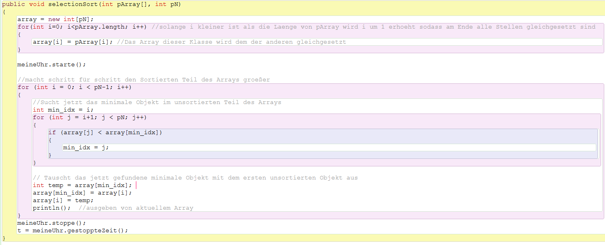
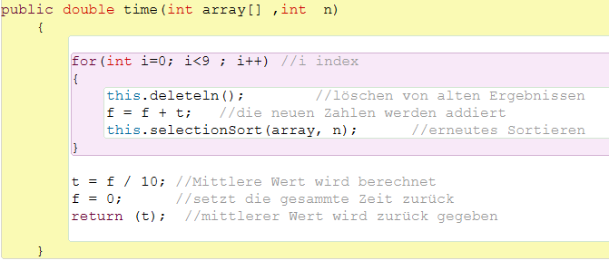

SelectionSort ist ähnlich wie InsertionSort ein sehr "Code-kurzer" und leicht verständlicher Sortieralgorithmus. Er sortiert den Array, indem er den niedrigsten Wert des Arrays her raussucht.
In meinem Test mit einer Array Größe von 50 Zahlen zwischen 1 und 9 schneiden InsertionSort und SelectionSort besser ab als QuickSort, MergeSort und BubbleSort. Bei dem Test war InsertionSort vergleichbar mit SelectionSort.

Im ersten Teil dieser Methode wird vermittelt zwischen der SuMAnwendung() und SelectionSort(). Hier wird ein "Vermittler Array" gleich dem Original Array gesetzt. So ändert das Programm nichts am Original Array, sodass auf diesen weiterhin zugegriffen werden kann.
Dann wird noch die Stoppuhr gestartet, bevor dann SelectionSort beginnt zu arbeiten:
SelectionSort sucht zuerst den niedrigsten Wert, den der Array speichert und tauscht diesen mit dem ersten Wert, der im Array gespeichert ist aus. Danach ist die erste Stelle fertig sortiert und wird virtuell zum sortierten Teil. Als Nächstes wird wieder der niedrigste Wert herausgesucht(aus dem unsortierten Teil also alles außer der ersten Stelle) und dieser wird dann mit dem ersten unsortierten Element (in dem Fall der 2ten Stelle ausgetauscht). Jetzt ist der virtuelle sortierte Teil schon 2 Stellen groß. Dieser Ablauf findet, dann mithilfe einer For-Schleife statt bis der ganze Array fertig sortiert ist. Dieser Algorithmus läuft genau so oft, wie der Array lang ist, denn jede Stelle wird einmal verschoben.

Die Methode der Zeitberechnung wird in der Dokumentation zur Zeitberechnung genauer erklärt.
SelectionSort von Dagh Zeppenfeld